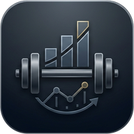

Progress
Link inválido
Este link no es válido o está incompleto. Pedile el link correcto a tu entrenador.
Agregá
Progress
a tu pantalla de inicio.
Cómo
×
Tenerlo como app en el teléfono
iPhone:
tocá el botón de compartir (el cuadrado con la flecha hacia arriba) y elegí
Agregar a inicio
.
Android:
tocá el menú de tres puntos y elegí
Agregar a pantalla principal
.
Entendido